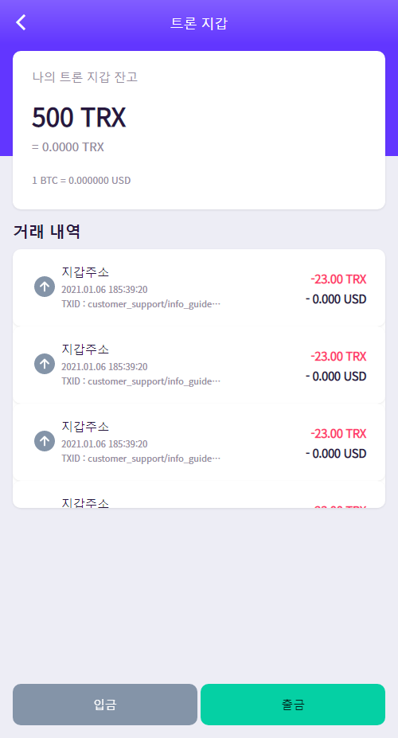
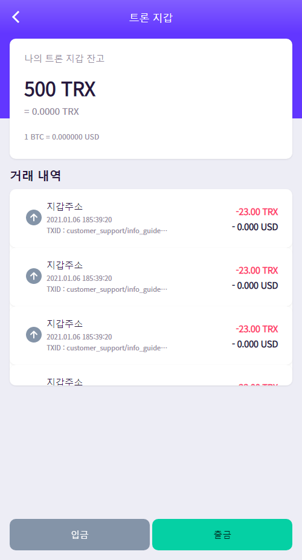

NIKE
나이키 슈즈 프로모션 웹은 One-page 형태의 반응형 웹입니다. 동영상을 full 화면으로 배치함으로써 메인 상품의 역동적인 느낌과 컬러 이미지의 아이덴티티를 부각하고자 노력하였습니다.
Live viewFont.
'Monoton', cursive;
'Play', sans-serif;
Color.
Tools.
Adobe XD, VS Code

 
